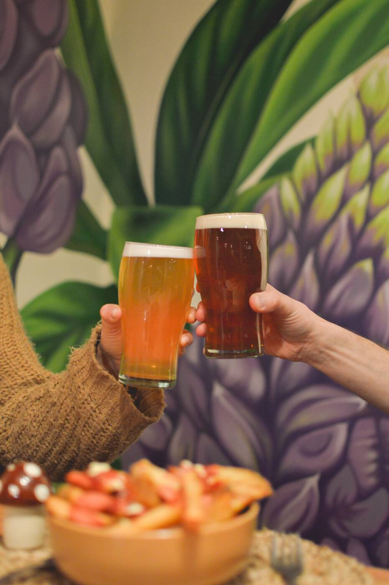
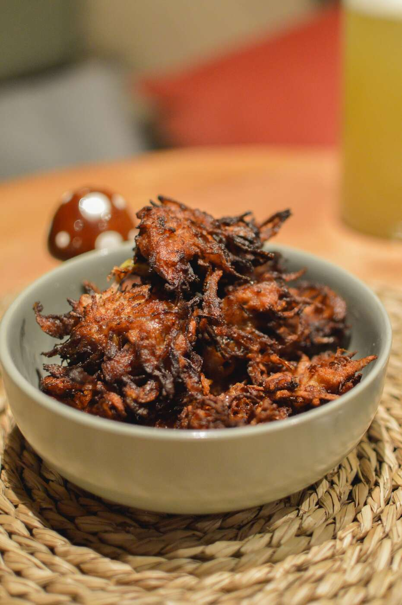
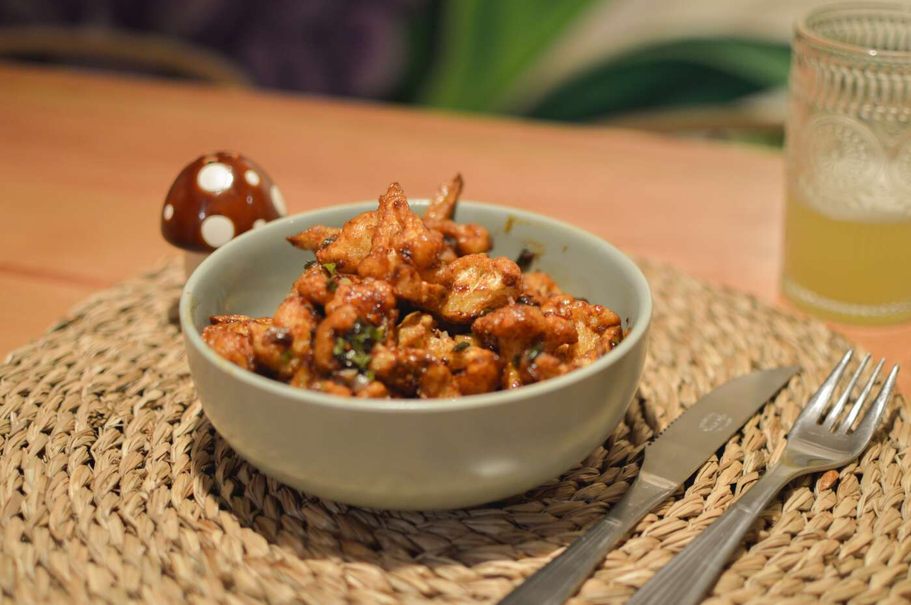
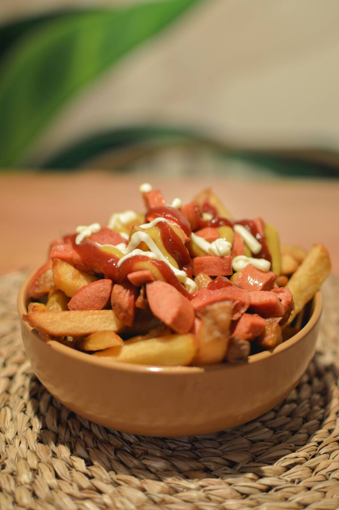

La tapioca es la goma que se extrae de la raíz de mandioca —la misma que en otros lugares llaman yuca, aipim o macaxeira—. Se ralla, se prensa y se deja decantar: ese almidón blanco, hidratado y tamizado, es todo el ingrediente.
Sin harina de trigo, sin levadura, sin leche y sin huevo. Por eso una tapioca es naturalmente libre de gluten y liviana, y por eso el relleno manda: dulce o salado, siempre entra.
La goma de mandioca se humedece apenas y se pasa por un tamiz fino hasta quedar como arena suelta.
Se esparce sobre la sartén caliente. Con el calor el almidón se funde solo y forma un disco: no lleva ningún ligante.
Un minuto de cada lado, el relleno adentro, se dobla al medio y va directo a la mesa. Se come con la mano.
Cosas para picar, papas como corresponde y birra tirada. La cocina sigue siendo 100% libre de gluten.



